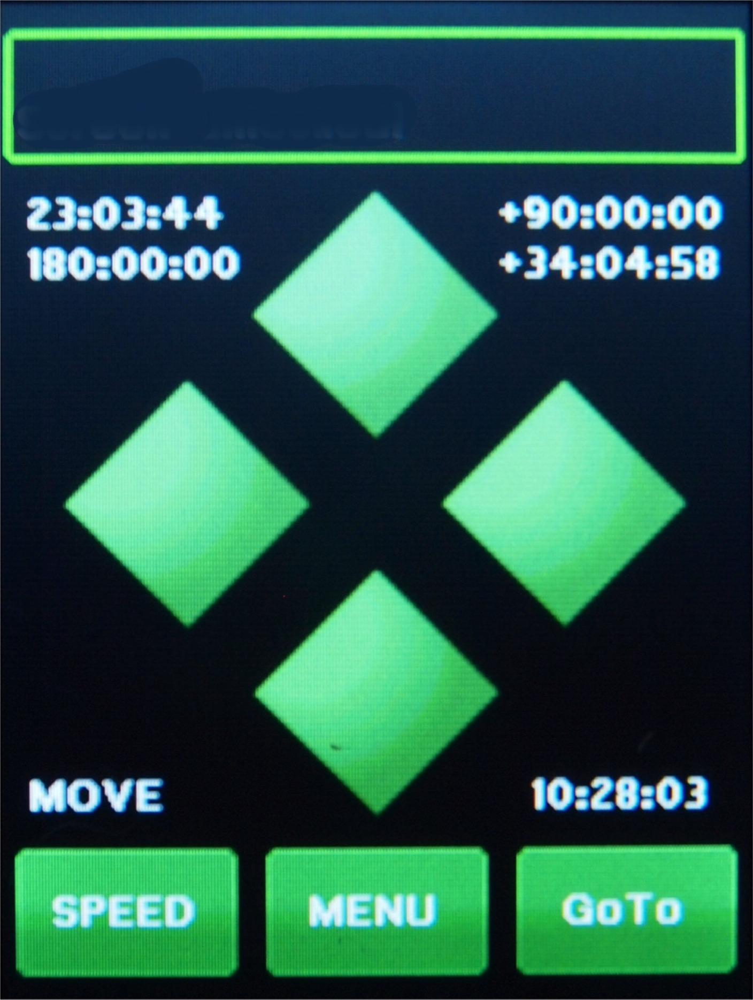

| Interactive Hand-Controller Menus - click on green buttons to Navigate |
| To see what the numbers on this screen means Select any number.  |
This is the main menu where all other functions can be
Navigated from: The Top box has 2 messages lines that displays the current status in the top and the previous in the second line. This sometimes changes when other functions are being preformed also, such as GOTO's. The four diamond buttons are movement buttons. The top and bottom button are for the Dec, and the left and right button are for RA. They will move the mount at the speed selected by the speed button on the lower left. The Speed button will take you through Slew, Move, Center and Guide speeds, and then back to Slew. Now the direction buttons have two modes of operation. If you push down and slide you finger off the button the mount will keep moving in the direction of the button until you press it again. If you press and hold, and the let off without sliding your finger off, it works like a normal button. Since the graphics screen is not multi-touch, if you use the finger slide off method, and touch the opposite button, the mount will speed up. The speeds are in the same order as the speed button. Also see sticky buttons explanation Also see What numbers on screen mean. |
|
The Menu button will take you to Main-Selection-Menu. The "GOTO" button will take you to the GOTO menu where you select a Catalog, The Solar System, Coordinate input, Do a bookmark, or Park the mount.
The buttons on the back of the hand controller work like the buttons do on the Gemini-1, and are multi-touch. |